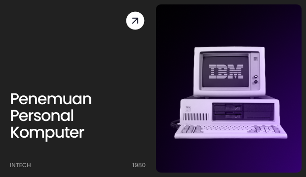
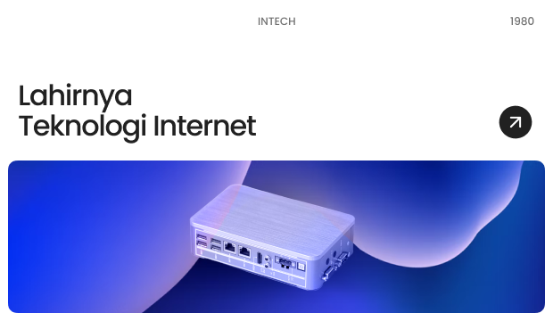
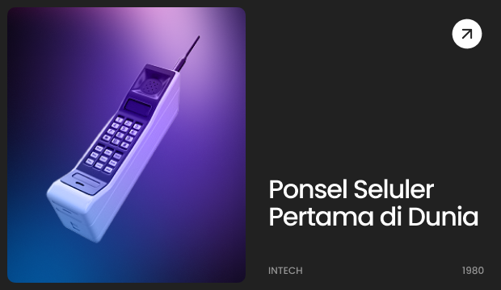
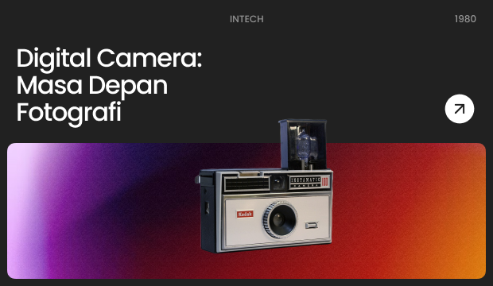
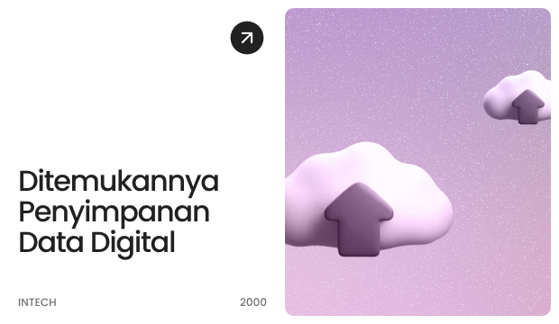

Penemuan Personal Computer (PC) Personal Computer (PC) adalah salah satu inovasi teknologi yang paling berpengaruh dalam sejarah modern. Ide untuk komputer yang dapat diakses oleh individu pertama kali diusulkan pada tahun 1970-an,

Lahirnya Teknologi Internet Internet telah menjadi salah satu inovasi paling berpengaruh dalam sejarah manusia, mengubah cara kita berkomunikasi, bekerja, belajar, dan berinteraksi satu sama lain,

Ponsel seluler, atau lebih dikenal sebagai telepon genggam, telah menjadi salah satu perangkat teknologi yang paling umum digunakan di seluruh dunia. Konsep telepon seluler pertama kali diusulkan pada awal abad ke-20, tetapi pengembangan dan komersialisasi perangkat yang kita kenal saat ini dimulai pada tahun 1970-an dan 1980-an.

Kamera digital telah merevolusi industri fotografi, mengubah cara kita mengambil, menyimpan, dan berbagi gambar. Kamera digital pertama kali dikembangkan pada tahun 1970-an, tetapi kamera digital praktis pertama yang tersedia untuk umum baru muncul pada awal 1990-an.

Cloud computing telah menjadi pilar penting dalam dunia teknologi informasi, memungkinkan akses yang mudah dan efisien ke sumber daya komputasi dan penyimpanan melalui internet.
